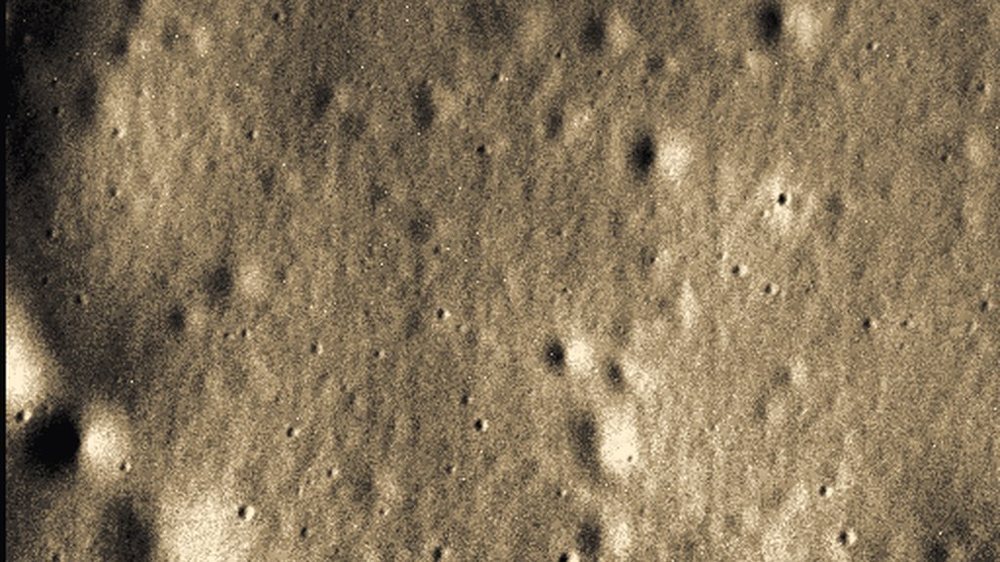
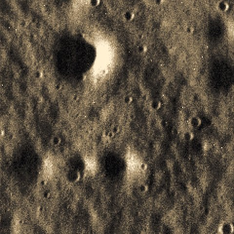
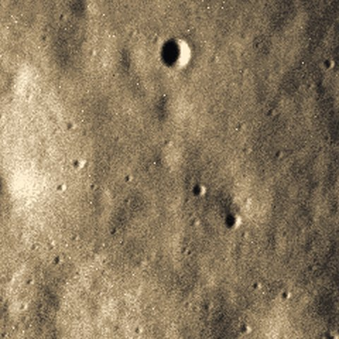

01 — THE LAST LIGHT
On April 30, 2015, a spacecraft took one last picture of Mercury. Eight hours later it became a crater.
MESSENGER was the first spacecraft ever to orbit the innermost planet. For four years it circled a world scorched by a Sun that looks up to three times wider than it does from Earth, and it sent home more than 270,000 images.
Then it ran out of fuel. At 11:07:43 UTC, 28.9 km above the floor of Jokai crater, its narrow-angle camera took a final frame. At 19:26 UTC it struck the surface at 3.9 km/s.
That last frame is archived by NASA's Planetary Data System, byte for byte. $MERCURY is the first coin whose mint key is seeded from it. Not a mascot. A real photograph, hashed and folded into the keypair that creates the token.


